| professional work personal projects about me | ||
|
"Replacements" (2026) Unreal Engine 5.7 One of my all-time favorite TV shows is HBO's "Band of Brothers" (2001). For its 25th year anniversary, I faithfully recreated its fourth episode "Replacements" in Unreal Engine 5.7. My work on "Replacements" included:
Credits "Replacements" for Unreal Engine 5.7 is a fan project, for entertainment and educational purposes only.
|
||
|
Description This year marks the 25th anniversary of one of my all-time favorite shows - HBO's "Band of Brothers" - yet it hasn't aged much. Each episode is a masterpiece on it's own, but this one has always felt most significant... Maybe because I'm Dutch, so the events depicted are hitting closer to home.
"Replacements" follows the men of Easy Company and the 506th during Operation Market Garden in The Netherlands in September 1944. The operation sadly resulted in many casualties, even though the country was supposed to be 'defended only by German kids and old men'. "Replacements" is a fan-made project, based on the HBO miniseries "Band of Brothers." It is created solely for entertainment and educational purposes.
Mentions
To be added soon... hopefully ;) |
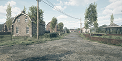 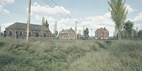 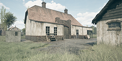 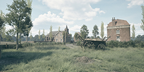 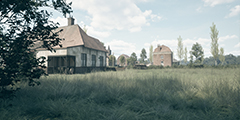 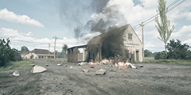 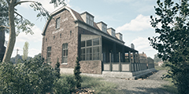 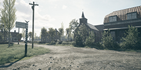 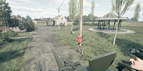 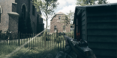 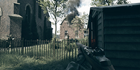 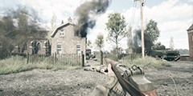 |
|